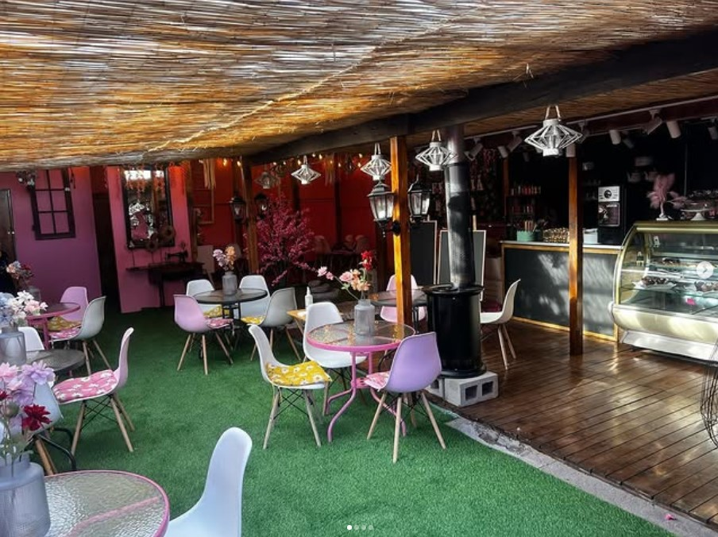
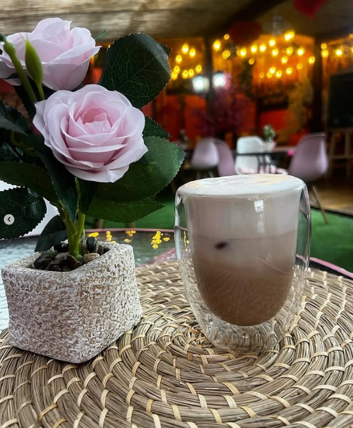
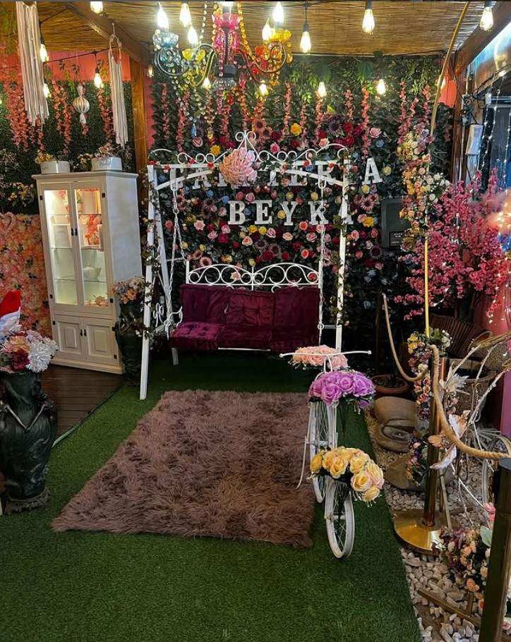

Galería



Conoce más de la cafetería en nuestro Instagram.
Horarios de Atención
Lunes a Viernes: 8:00 AM - 8:00 PM
Sábados y Domingos: 9:00 AM - 5:00 PM
¿Dónde estamos?
Dirección: Av Los Zapadores 1961, Conchalí, Santiago
Visítanos en nuestra dirección física y entérate más de nosotros.
Cómo llegar desde el Metro Vivaceta
Ver en Google MapsContacto
- Teléfono: +56 9 4541 3057
- Email: contacto@cafeteria.com
- Instagram: @cafeteriabeyka